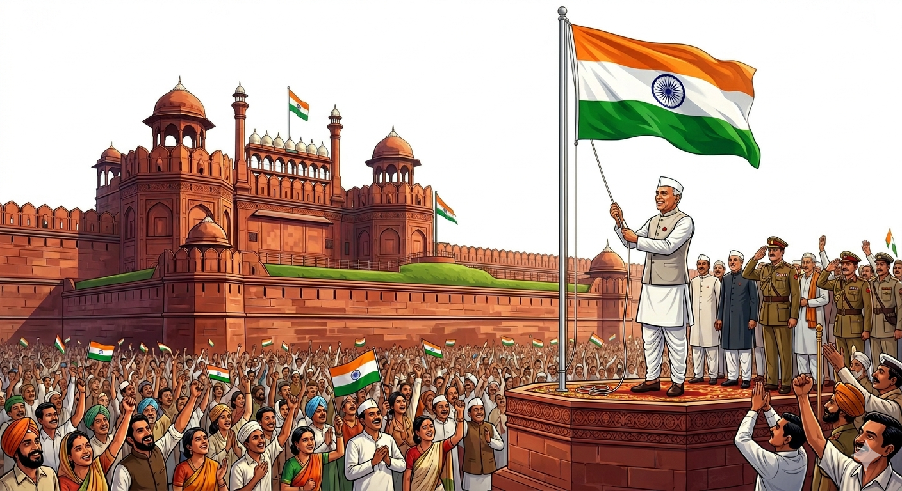
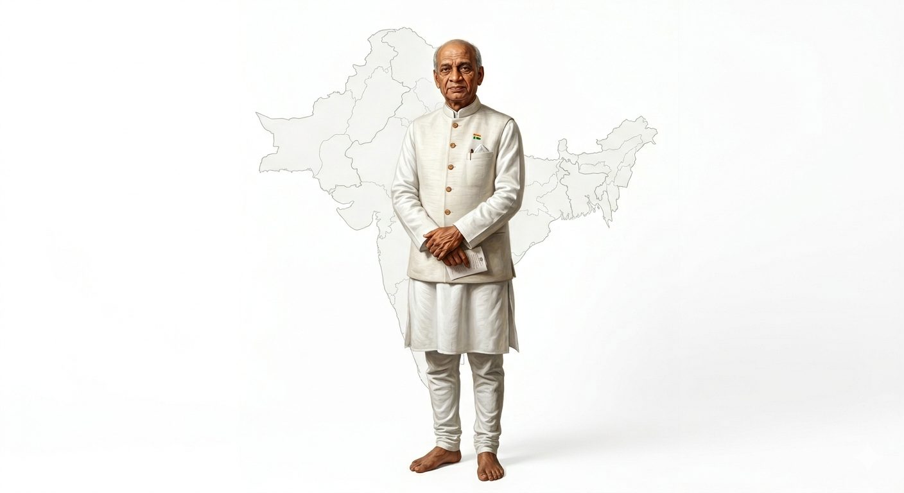
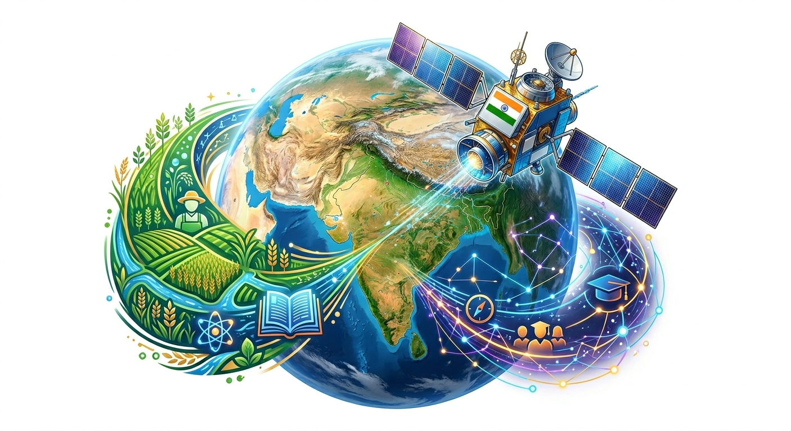

The Indian Independence Act of 1947 was passed by the British Parliament. It was designed by Clement Attlee, the Prime Minister of Britain. The Act was based on the Mountbatten Plan, which facilitated the transfer of power and partitioned India into two nations: India and Pakistan.
Main Features
The British rule over India would end with immediate effect.
An independent dominion of India was made, including regions like Madras Presidency, Carnatic, East Punjab, West Bengal, and Assam.
West Punjab, North-West Frontier Province (NWFP), Sindh, and East Bengal would go to Pakistan.
The Princely States were given complete freedom to decide which dominion they wanted to join.
Both dominions were granted complete freedom and became members of the British Commonwealth.
FactIntegration of Princely States:
With a skilful display of wisdom and diplomacy, Sardar Vallabhbhai Patel succeeded in persuading most of the 560 Princely States to join India by August 15, 1947. Only the states of Junagadh, Jammu & Kashmir, and Hyderabad joined later (Junagadh and Hyderabad joined after military action).

Figure 1: PM Jawaharlal Nehru hoisting the Indian tricolour at the Red Fort, 1947
2. Partition and Its Aftermath
Lord Mountbatten was the last Viceroy of India and became the first Governor-General of Independent India. Following him, Chakravarti Rajagopalachari was appointed as the first and the last Indian to become a Governor-General.
ImportantThe Tragedy of Partition:
At the time of the partition of India, about six million people crossed the newly drawn borders in a massive two-way exodus. Horrific communal riots claimed thousands of innocent lives on both sides of the border.
Post-independence, other colonial states under foreign rule were also liberated and merged with India:
Pondicherry: Liberated from the French in 1953-54.
Goa: Liberated from the Portuguese in 1961.
Sikkim: Formerly a British protectorate, became a part of free India in 1975.
3. The Indian Constitution
A Constituent Assembly was formed to draft the framework of independent India. It held its first session in 1946 and re-assembled on August 14, 1947, as the sovereign body for the dominion of India.
Timeline: The Constituent Assembly took almost three years (two years, eleven months, and seventeen days) to complete the drafting.
Adoption: The Constitution was passed on November 26, 1949, and officially adopted on January 26, 1950, making India a Republic.
Key Leaders: Dr. Rajendra Prasad was elected as the first President, Jawaharlal Nehru as the first Prime Minister, and Sardar Vallabhbhai Patel as the Deputy Prime Minister.
India held its first General Elections in 1952, recording an impressive voter turnout of over 62%.

Figure 2: Sardar Vallabhbhai Patel, whose diplomacy unified 560 princely states into one India
4. India - On the Path of Progress
Despite early predictions that India would collapse due to its vast diversities (culture, religion, caste, language), the country has survived as a united, democratic nation.
Economic & Agricultural Growth: Progress is visible in massive infrastructural upgradation (power, IT, transport). Agriculture flourished due to mechanization, better irrigation, and fertilizers, leading to movements like the Green Revolution and the White Revolution.
Planned Development: India initially adopted planned development inspired by the USSR. The Planning Commission was set up in 1950, and the First Five Year Plan (1951-56) was presented by Nehru.
ConceptNITI Aayog:
In 2015, the Planning Commission was replaced by NITI Aayog (National Institution for Transforming India). It serves as a policy think-tank aiming to foster involvement by State governments in economic policy-making using a bottom-up approach, moving India toward cooperative federalism.
5. Indian Democracy and Political Parties
India opted for a democratic system to vest sovereign power in the hands of the people, ensuring equal status for every community, religion, and language.
Political Evolution: The Congress party dominated under Nehru until 1964. The year 1967 was a turning point when regional parties gained prominence.
The Emergency: Indian democracy functioned smoothly, except for a brief dark period when a state of emergency was imposed in 1975 by Prime Minister Indira Gandhi.
Coalitions: Recent decades have seen the rise of coalition governments and 'alliances/fronts' where multiple parties collectively form the government.
National vs. Regional Parties
The Election Commission of India is an autonomous authority that recognizes parties based on specific criteria:
Regional/State Party: A party that secures at least 6% of total votes in a state assembly election and wins at least two seats.
National Party: A party that secures at least 6% of total votes in Lok Sabha or Assembly elections in four states and wins at least four Lok Sabha seats.
6. India's Foreign Relations
Jawaharlal Nehru was the chief architect of India's foreign policy. The core features of this policy include Anti-Colonialism, Anti-Imperialism, belief in the United Nations, Regional Cooperation, and the Non-Aligned Movement.
ConceptPanchsheel (The Five Principles):
The foundation of India's foreign policy rests on Panchsheel:
Mutual respect for each other's territorial integrity and sovereignty.
Mutual non-aggression.
Mutual non-interference in each other's internal matters.
Equality and mutual benefits.
Peaceful Co-existence.
7. Challenges to Indian Society
At independence, India faced herculean tasks: extreme poverty, empty coffers, millions of refugees, and a lack of skilled manpower and infrastructure. While the nation has made multi-faceted socio-economic progress, issues like poverty, illiteracy, terrorism, and cross-border attacks continue to be stumbling blocks requiring ongoing national effort.
8. India Vision 2020
Proposed by our late President Dr. A.P.J. Abdul Kalam, India Vision 2020 is a dream to see India emerge as a vibrant, dynamic, and competitive nation. It emphasizes a better quality of education, hi-tech science and technology, biotechnology, improving health/nutrition, tackling population growth, and ensuring peace and security through "enlightened and ignited minds."

Figure 3: Representation of Dr. Kalam's 'India Vision 2020', aiming for technological and social advancement